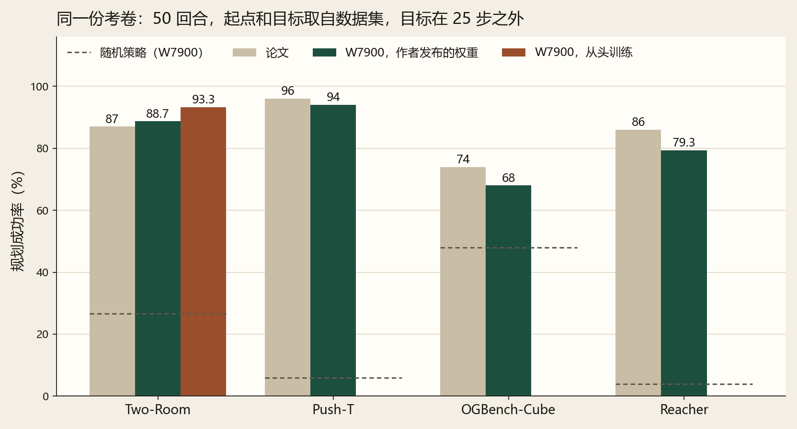
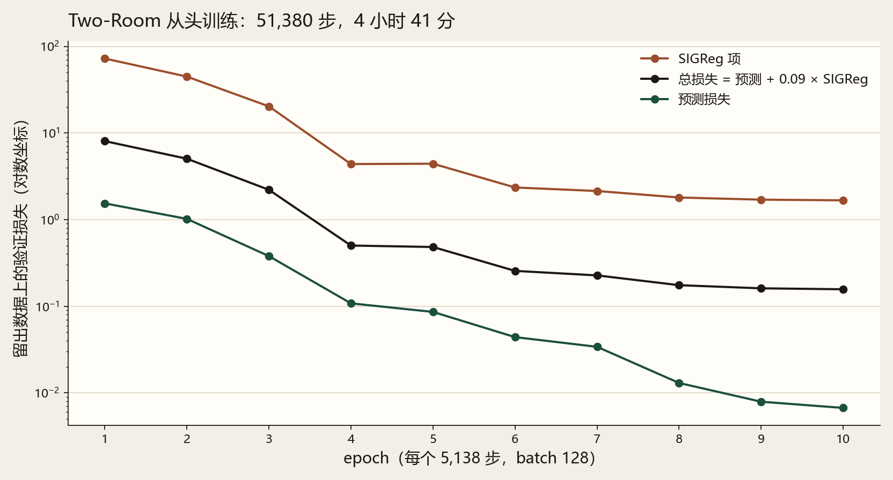

LeWorldModel · 2026.11.22
【一卡一世界】把一帧画面压成 192 个数，再在里面挑动作 | NeurIPS 2026 LeWorldModel论文复现笔记



世界模型最诱人的用法，是动手之前先在脑子里把后果演一遍。最直接的做法是把未来的每一帧都画出来，好看，但贵：V-JEPA 2 的论文里，基于视频生成的 Cosmos 规划器在一张 RTX 4090 上，每决定一个动作要算 4 分钟。另一条路不画像素，只预测下一帧的特征，这就是 LeCun 这些年一直在推的 JEPA（联合嵌入预测架构）。它便宜，可是有个老毛病：编码器只要把所有画面都映射成同一个向量，“预测下一帧的特征”就变成一道永远答对的送分题，误差恒为零，模型什么也没学到。这叫表示坍塌。
LeWorldModel（LeWM）对这个老毛病开的药方只有一味：每个训练批次，都检查一下这批特征像不像一团标准正态分布。像，就说明它们铺开了，没挤成一个点。损失函数因此只剩两项，要调的超参数只剩一个。整个模型 1500 万参数，论文说一张卡几个小时就能训完；规划一次不到 1 秒，比用冻结 DINOv2 特征的 DINO-WM 快 48 倍。
这篇工作来自 Mila 与蒙特利尔大学、纽约大学、三星 SAIL 和布朗大学，作者是 Lucas Maes、Quentin Le Lidec、Damien Scieur、Yann LeCun 和 Randall Balestriero，发表在 NeurIPS 2026，论文是 arXiv:2603.19312，项目页在 le-wm.github.io。这次在一张 AMD Radeon Pro W7900 上，把作者发布的四个环境的权重都评了一遍，又按论文的设置从头训了一个。
坍塌是 JEPA 的老毛病
不预测像素，只预测特征，这个想法省掉了大量无用功：树叶怎么晃、地板的纹理是什么，对“推一下 T 形块会怎样”毫无帮助。代价是监督信号也跟着变成了特征本身。像素是固定的，特征却是编码器自己定的，编码器完全可以偷懒，把一切都编成同一个向量。
现有的防坍塌办法，各有各的代价。I-JEPA、V-JEPA 用 EMA 加 stop-gradient：目标编码器是在线编码器的滑动平均，梯度不往目标那边流。它确实不坍塌，但它并不对应任何明确目标的最小化，没人说得清它为什么不坍塌。DINO-WM 干脆绕开问题，直接用冻结的 DINOv2 当编码器，不训练就不会坍塌，代价是表示被预训练锁死，而且每一帧都要带一整张 patch 特征图去规划，一次规划 47 秒。PLDM 走端到端，从像素开始训，靠 VICReg 衍生出的七项损失防坍塌：方差、协方差、时间平滑、逆动力学，一共六个权重要调。LeWM 的作者为了把 PLDM 当基线调好，光 Push-T 一个环境就网格搜了 256 组配置；调好之后，PLDM 在 Push-T 上三个种子的成功率是 78.0 ± 5.0，波动在三家里最大。要么难调，要么太慢。
SIGReg：把“别坍塌”写成一道正态性检验
SIGReg 来自 Balestriero 和 LeCun 2025 年的 LeJEPA。思路是这样的：想检验一批 192 维的向量是不是各向同性的标准正态，高维检验既难做又不稳；但 Cramér–Wold 定理说，一个分布的所有一维投影都对，整个分布就对。于是每个批次随机抽 1024 个单位方向，把这批向量投影到每个方向上，得到 1024 组一维的数，对每组做一次 Epps–Pulley 正态性检验，再把统计量取平均当损失。
Epps–Pulley 检验比的是特征函数。le-wm 的实现只有几行：把投影后的数乘上 0 到 3 之间的 17 个点 t，取 cos 和 sin 的均值，就是这组数的经验特征函数；再和标准正态的特征函数 exp(−t²/2) 逐点比，差的平方加权求和。挤成一个点的特征，在任何方向上的投影都是同一个数，它的特征函数是一条不衰减的波，和 exp(−t²/2) 差得最远，检验过不去。
训练的损失因此只有两项：预测出的下一帧向量和真实向量之间的均方误差，加上 λ 倍的 SIGReg。没有 EMA，没有 stop-gradient，梯度流过所有部件。投影方向数和积分点数的消融几乎不影响结果，真正要调的只有 λ，论文用 0.1，仓库配置里是 0.09。一个超参数可以二分搜索，PLDM 的六个权重是六维网格。
一帧只留一个向量
编码器是 ViT-Tiny：patch 14，12 层，3 个头，隐藏维 192，约 500 万参数。只取最后一层的 [CLS] token，再过一层带 BatchNorm 的 MLP 投影。作者特意交代了这层投影的来由：ViT 末层的 LayerNorm 会让 SIGReg 优化不动，得在它后面再接一层，正态性检验才拽得动这批向量。
预测器是 6 层、16 个头的 Transformer，约 1000 万参数，看最近 3 帧的向量，用因果掩码自回归地预测下一帧。动作通过 AdaLN-zero 注入每一层，这是扩散模型 DiT 里的稳训练手法：每层的调制量和门控都初始化为零，训练开始时每一层都是恒等映射，动作的作用是一点点学出来的。
训练数据只有观测和动作，没有奖励，没有任务标签。帧跳为 5，每个样本是 4 帧加 4 段动作（每段 5 个原始动作），224×224，batch 128，每个环境 1 万到 2 万条轨迹，训 10 个 epoch。
说白了，一张 224×224 的画面最后只剩 192 个数，整个世界模型就在这 192 维里推演。
在 192 维里挑动作
规划用的是交叉熵法（CEM）。把当前画面和目标画面各编码成一个向量；随机采 300 条动作序列，每条 5 段，让预测器按每条序列往前滚 5 步；终点和目标向量的 L2 距离就是代价；留下代价最低的 30 条，用它们的均值和标准差重新采样，如此 30 轮。5 段动作相当于 25 个环境步，执行完再重新规划。全程不生成一张图。
stable-worldmodel 里还有一个不起眼的细节：当前画面和目标画面的向量在 30 轮迭代之间是缓存的。一次规划只编码 2 张图，剩下的 300×30 次推演全在预测器里，在 192 维的向量上做。这就是“快”的来源：DINO-WM 每帧要带的 token 数大约是 LeWM 的 200 倍。
评测的考法也要说清楚。从数据集里随机抽一个状态当起点，同一条轨迹 25 步之后的状态当目标，给 50 步预算，到了就算成功。这是短距离的目标匹配，不是长任务。
论文的成绩单：两赢两输
论文图 6 里，Push-T 上 LeWM 只看像素就拿到 96%，比 PLDM 的 78% 高 18 个点，还超过了带本体感知的 DINO-WM（92%）；Reacher 上是 86%，PLDM 78%，DINO-WM 79%。输的两个同样清楚：最简单的 Two-Room 上，LeWM 87%，PLDM 97%，DINO-WM 和目标条件行为克隆（GCBC）都是满分；OGBench-Cube 上 74%，落后 DINO-WM 的 86% 和 GCBC 的 84%，而随机动作就有 48%。作者对 Two-Room 的解释是环境的内在维度太低，难以撑开一个 192 维的高斯；但附录里，它对智能体位置的线性探针相关系数是 0.996，信息其实都在，差距可能出在动力学或规划上。
速度那边，论文图 3 给的完整规划耗时是 LeWM 0.98 秒、DINO-WM 47 秒，测在一张 NVIDIA L40S 上。论文还在相同计算量（固定 FLOPs）下比了一次：Push-T 上 LeWM 90%、DINO-WM 13%，Cube 上 74% 对 48%。DINO-WM 每帧的 token 太多，限定算力就只能少想几轮。48 倍来自表示的粒度，不是 SIGReg 的功劳；SIGReg 的功劳是让“一帧一个向量”的端到端训练稳得住。
一个旋钮，和好几个开关
“只剩一个超参数”这话只对损失成立。附录里 Push-T 上的消融：λ 在 0.01 到 0.2 之间成功率都在 80% 以上，到 0.5 才骤降，这个旋钮确实好调。可预测器的 dropout 从 0.1 改成 0，成功率从 96% 掉到 78%，正好回到 PLDM 的水平，改成 0.5 是 66.7%；预测器换小一号是 80.7%，换大一号也降到 86.7%；嵌入维度从 192 降到 24，成功率从九成多掉到七成多。在损失里加一项像素重建，成功率从 96% 掉到 86%，作者的解释是重建逼着模型记住与控制无关的细节。规划器换成 Adam、RMSProp、SGD 这类沿梯度走的方法，分别是 84%、67.3%、26%，不求导的 CEM 最好。编码器换成 ResNet-18 是 94%，差别不大。架构上的开关并没有消失，只是不在“一个超参数”的范围里。
192 个数里装了多少物理
线性探针看信息在不在。Push-T 上，从 192 维向量里线性读出智能体位置、方块位置和方块角度，相关系数分别是 0.974、0.986 和 0.902，方块角度比 PLDM 的 0.745 好得多，接近用 DINOv2 特征的 DINO-WM（0.979）。短板在细节：Cube 上末端执行器的偏航角只有 0.124，DINO-WM 是 0.828。一帧只留一个向量，丢掉的恰恰是朝向这种东西。
“违背预期”实验让物体凭空瞬移，三个环境里预测误差都显著上升（p < 0.01）；只改物体颜色，误差变化不显著。模型对物理上不可能的变化更敏感，不过颜色不引起“惊讶”，也可能只是表示里本来就没留颜色。训练过程中，潜空间里的轨迹还会自发变直，比专门加了时间平滑项的 PLDM 还直。
它还没证明什么
考场又短又小：四个仿真环境，目标就在同一条轨迹 25 步之外，规划 5 段就重来。同时报了 GCBC 的三个环境里，LeWM 只在 Push-T 上赢；直接模仿就能做好的任务，回答不了“先学世界、再规划”值不值这份额外的成本。统计口径也偏薄：只有 Push-T 报了种子方差，其余环境都是一次 50 回合，差 4 个点只相当于 2 次成功；这次复现里，同一份 Two-Room 权重换个起点种子，成功率就能从 84% 跳到 96%。世界模型真正该证明的，是没见过的目标、要绕路的长任务和真机，这些论文都还没碰。
一张 W7900：代码一行没改，麻烦在外面
le-wm 本身很小，环境、规划器和数据读取在 stable-worldmodel 里，训练循环在 stable-pretraining 里，全是 Python。PyTorch 的 "cuda" 设备在 ROCm 上本来就指向 HIP，ViT 的注意力走 SDPA，在这张卡上用 flash attention 的核。所以 le-wm 的代码一行没改，麻烦都在外面。
依赖是一条连锁反应。stable-worldmodel 0.1.1 把 eval.py 要的 HDF5 读取器挪进了 format 附加项；transformers 5 给 ViT 的参数改了名，作者发布的权重载不进去，只好回到 transformers 4，它要求 huggingface-hub 小于 1，后者又要求 datasets 小于 5。权重和数据的位置也得对上：load_pretrained 写死从 huggingface.co 下载，数据集要放进 datasets/ 子目录，评测配置要的文件名和压缩包里的不一样，这些靠下载脚本里几行链接解决，配置文件一个没动。
训练吞吐是另一件事。合成数据上单测一步训练，每步 358 毫秒，一半的 GPU 时间花在 bf16 矩阵乘法上。设一个环境变量 PYTORCH_TUNABLEOP_ENABLED=1，PyTorch 会把每种矩阵形状在 rocBLAS 和 hipBLASLt 里的候选核都实测一遍，挑最快的存下来；算权重梯度的那几个大矩阵乘法都换了核，一步降到 279 毫秒。
新版 MuJoCo 画的地板，和数据集里的不一样
Two-Room 和 Push-T 用 pygame 在 CPU 上画，一评就和论文对上了。Reacher 用 MuJoCo，由 Mesa 的 radeonsi 驱动在 W7900 上画，却只有 66%，比论文低 20 个点。
关键在评测怎么喂图：目标图取自数据集，起点的当前图也取自数据集，之后每一步的当前图由环境现画。两边画法只要有系统性的差别，第二次规划就是拿现画的图去追数据集里的目标。把数据集里的关节状态写回环境再画一张，和同一行存的帧逐像素比：机械臂分毫不差，地板不一样，数据集里是四格深浅相间的棋盘，现画的只有一整块深蓝，平均差 20 个灰度级（开头第二张图）。换成 CPU 上的 OSMesa 软件渲染，差值一模一样，问题不在 GPU。
不钉版本时，dm_control 会拉进 11 月刚发布的 MuJoCo 4.0.1，而数据集文件的时间戳是 2026 年 3 月。逐个版本往回查，3.11.0 和数据集只差 2.6 个灰度级，3.12.0 起就是 20。钉回 3.11.0，Reacher 回到 76%；换成数据集那个年代的 3.5.0 物理还是 76%，再换两个种子是 82% 和 80%，平均 79%，仍比论文低约两个标准差。这个坑和 AMD 无关，今天在任何一张卡上新装环境都会踩进去。它说明的是这类拿像素比像素的世界模型对渲染器有多敏感：地板纹理一变，同一份权重掉 10 个点。
验证说明了什么
开头第一张图是这次的结果。作者发布的权重按 eval.py 的默认设置每次评 50 回合：Two-Room 三个种子是 86%、96%、84%，平均 89%，论文 87%；Push-T 94%，论文 96%；OGBench-Cube 68%，论文 74%；Reacher 三个种子是 76%、82%、80%，平均 79%，论文 86%。成功率在 80% 附近时，50 回合的标准差约 6 个百分点。除了 Reacher，三个环境和论文都在一到两个标准差以内，Cube 随机策略的 48% 和论文分毫不差。Two-Room 的随机策略这里有 18% 到 32%，论文是 0%，没说怎么取的。三段视频都是成功的回合：左边是智能体按 LeWM 的规划去做，中间是数据集里的原轨迹，右边是目标。
从头训练只做了 Two-Room：配置全用仓库默认（预测器看 3 帧，和发布的权重一致），只把 epoch 改成论文附录写的 10 个。51,380 步用了 4 小时 41 分，验证损失从 8.06 一路降到 0.157（开头第三张图）。训出来的权重跑三个种子是 92%、94%、94%，平均 93%；作者发布的权重在同样三个种子上平均 89%，论文写的是 87%。差距约 1.4 个标准差，能说的只是不比作者发布的差。“一张卡几个小时训完”，在 W7900 上成立。
规划耗时：日志里第一次规划总要 40 秒上下，那是求解器把 50 个环境挨个规划了一遍，不是热身。按环境数一除，四个环境都是 0.79 到 0.81 秒一次。论文在 L40S 上是 0.98 秒，但新版 stable-worldmodel 会缓存编码，和作者当时的代码不完全一样，这两个数只能看量级。
没验证的：Push-T、Reacher 和 Cube 没有从头训练，Push-T 按这里的速度要 12 个小时左右；和 DINO-WM、PLDM 等基线的对比，以及探针和“违背预期”实验，都不在这次运行的范围里。